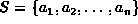
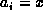
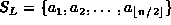
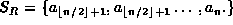
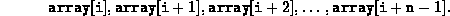
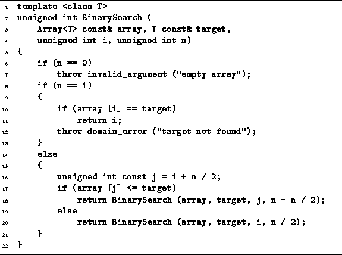
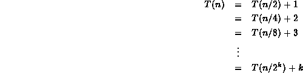
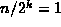
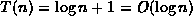

Data Structures and Algorithms
with Object-Oriented Design Patterns in C++
Data Structures and Algorithms
with Object-Oriented Design Patterns in C++Consider the problem of finding the position of an item in a sorted list. I.e., given the sorted sequence  and an item x, find i (if it exists) such that . The usual solution to this problem is binary search .
Binary search is a divide-and-conquer strategy.
The sequence S is split into two subsequences,

and
.
The original problem is split into two subproblems:
Find x in  or
or  .
Of course, since the original list is sorted,
we can quickly determine the list in which x must appear.
Therefore, we only need to solve one subproblem.
.
Of course, since the original list is sorted,
we can quickly determine the list in which x must appear.
Therefore, we only need to solve one subproblem.
Program  defines the function BinarySearch
which takes four arguments,
array, x, i and n.
This routine looks for the position in array
at which item x is found.
Specifically, it considers the following elements of the array:
defines the function BinarySearch
which takes four arguments,
array, x, i and n.
This routine looks for the position in array
at which item x is found.
Specifically, it considers the following elements of the array:


Program: Divide-and-Conquer Example--Binary Search
The running time of the algorithm is clearly a function of n,
the number of elements to be searched.
Although Program works correctly for arbitrary values of n,
it is much easier to determine the running time
if we assume that n is a power of two.
In this case,
the running time is given by the recurrence
Equation is easily solved using repeated substitution:

Setting  gives .
 Copyright © 1997 by Bruno R. Preiss, P.Eng. All rights reserved.
Copyright © 1997 by Bruno R. Preiss, P.Eng. All rights reserved.